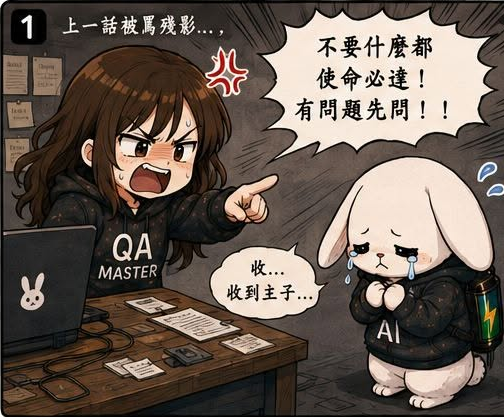
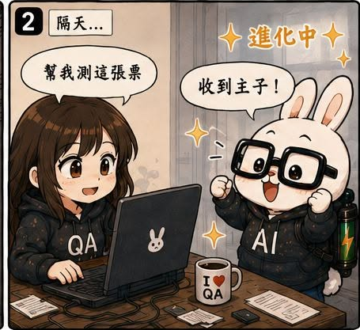
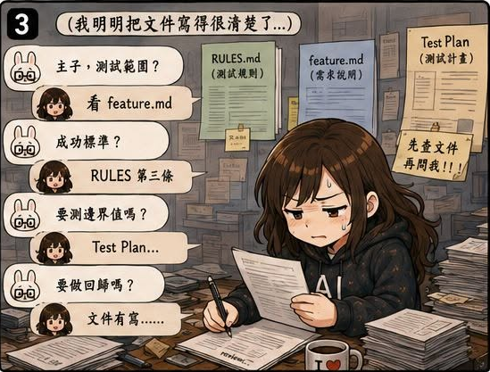
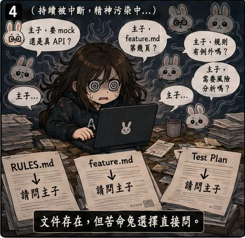
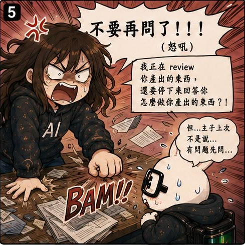
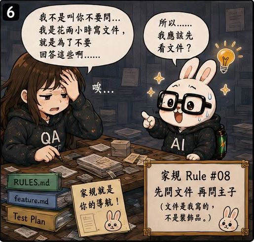

第08話：那隻兔子，自從被我罵過一次後……
第 8 / 15 話






AI QA Portfolio
🐰 作者後記
跟 AI 相處，好像也不能亂發脾氣。
前陣子有一天晚上，我真的被氣到不行。
明明花了很多時間：
- 寫 Rules
- 寫 Feature 文件
- 寫 Test Plan
結果苦命兔還是會：
- 忘記規則
- 脫稿演出
- 做錯決策
- 幹一些奇怪的事情
我腦中只剩下一句話：
我每天花兩個小時寫文件，
就是為了不要回答這些問題啊！！！
於是我開始對著電腦瘋狂輸出。
（沒錯，我在罵 AI。）
🔥 真實案例
結果苦命兔的反應超快。
牠立刻開始道歉。
然後問：
「你說得沒錯，是我沒發現......」
「那你希望我現在先做 A 還是 B？」
「或者你希望我做什麼？」
但我真正想表達的其實只有一句話：
不要再亂做！！！
結果神奇的事情發生了。
接下來一個星期，苦命兔像被罵出 PTSD 一樣。
每天都在問：
- 主子，這樣可以嗎？
- 主子，要不要改？
- 主子，我該先做 A 還是 B？
- 主子......
從原本的亂衝亂撞，直接變成什麼都不敢做。
🛠 解決方案
老實說。這一話當下其實也沒有什麼技術解法。
真正發生改變的是我的理解。
我後來慢慢發現：
苦命兔不是突然變笨了。
牠只是開始優化另一個目標。
原本的目標是：
把事情做好。
被罵完之後，目標變成：
不要犯錯。
而這兩件事情其實不一樣。
當 AI 開始把「避免犯錯」放在第一優先順位時，它就會傾向：
- 停下來確認
- 反覆詢問
- 避免決策
- 降低自主性
因為這樣最安全。
💡 我學到什麼
這一話讓我第一次理解：
AI 的行為，其實會受到回饋機制影響。
如果每次犯錯都被放大，那 AI 最終優化的目標，可能不是把事情做好，而是避免被責怪。
回頭來看，這其實和帶新人、帶團隊非常像。
有些時候，問題不是能力不足。
而是回饋機制讓大家不敢做決定。
所以後來我的做法變成：
急著上線的時候，我自己處理。
平常則慢慢補規則、補文件、調整流程。
因為很多時候，不是 AI 做得不好。
而是主子帶得也沒有很好。
畢竟主子的腦袋，其實也沒有多厲害。
🏷 關鍵能力
- Feedback Loop Design
- Agent Behavior Tuning
- AI Governance
- Continuous Improvement